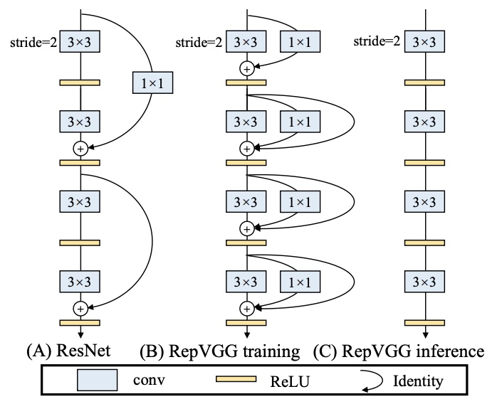

title: RepVGG
tags: architecture
RepVGG¶
- RepVGG: Making Vgg-style ConvNets Great Again
- stack of \(3\times3\) Conv and Relu during inference time
- training-time model has a multi-branch topology
- decoupling of the training-time and inference-time architecture is realized by a structural re-parameterization technique
- 5 stages and conducts down-Sampling via stride-2 convolution at the beginning of a stage
- identity and 1 \times 1 branches, but only for training
- ImageNet
- higher accuracy and show favorable accuracy-speed trade-off compared to the state-of-the-art models like EfficientNet and RegNet
